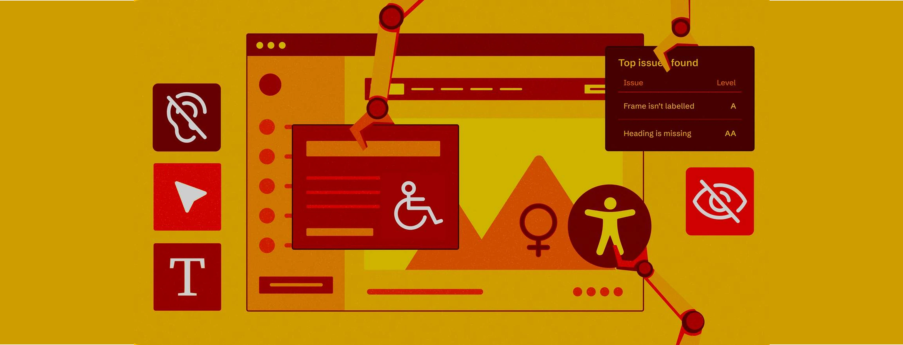
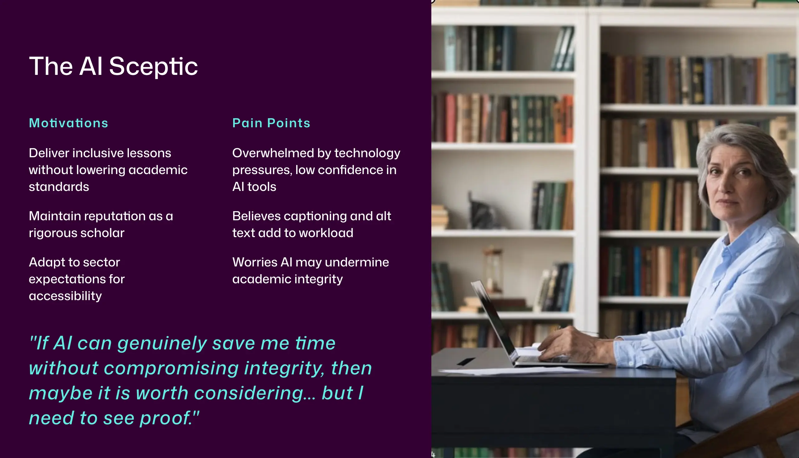

A blended AI accessibility program built to teach critical use of AI, not blind adoption of it. Built in Articulate Rise, the four-module course helps university lecturers use AI tools to create inclusive, compliant course materials. This case study focuses on Module 2.
The first audio clip is deliberately recorded in a noisy environment. Hear the problem before the explanation.
Australian universities are required to meet the Disability Standards for Education (2005), with TEQSA guidance tightening since 2024. Most lecturers care about their students. The gap is time and know-how: captioning a lecture or writing alt text for a week of slides is slow, manual work.
AI tools can close that gap. But without guidance, staff adopt them uncritically and assume they have met the standard when they have not.
University lecturers, time-poor and with mixed digital confidence. Most care about their students, but accessible course material competes with everything else already on their plate.

By the end of the program, lecturers will be able to:
The tension sits between four things pulling in different directions: accessibility compliance, AI capability, workload, and the ethics of relying on AI-generated output without checking it. The design challenge was to translate WCAG 2.1 AA, AI ethics, and accessibility compliance into practical, learnable skills for people who are not technologists, in a way that fits inside a lecturer's actual working week.
Rather than a single module, the program moves lecturers through four stages: understanding why accessibility matters, practising AI tools on real content, embedding new habits into existing workflows, and sharing with peers. Module 2 is where the hands-on AI practice happens.
Module 4 is a live synchronous workshop rather than another self-paced module because shifting academic culture around accessibility compliance requires social learning and peer accountability. A standalone digital module can build individual knowledge but it cannot create the shared commitment that comes from colleagues discussing their own materials together in real time.
Why accessibility matters, disability standards and WCAG. Outcome: lecturers identify accessibility gaps in their own materials.
Using AI to create captions and alt text, evaluating ethical risks. Outcome: lecturers apply AI tools to their own content and critically evaluate outputs.
Applying checklists, redesigning one personal resource. Outcome: lecturers integrate accessibility practices into daily teaching.
Sharing improved resources, peer discussion and breakout review. Outcome: community of practice for accessibility and AI adoption.
The instructional strategy is grounded in published research: Disability Standards for Education (2005), TEQSA guidance (2024), and evidence on skill gaps in higher education. UX research methods identified the specific barriers, motivations, and confidence levels of the target audience before any content was written.
Merrill's First Principles of Instruction shaped the lesson structure that follows, particularly activation, demonstration, application, and integration. Content was chunked deliberately to reduce cognitive load: each lesson follows the same structure so learners can predict what is coming and focus on the content rather than the interface.
This case study focuses on Module 2, the two-hour block where lecturers get hands-on with AI tools for captions and alt text. It is the fully built deliverable; Modules 1, 3, and 4 are fully designed and documented but not yet developed in Rise.
The first audio clip in Lesson 2.1 is deliberately recorded in a noisy environment. Learners hear the problem before they are told what it is. Merrill's activation principle applied directly: connect to experience first, then introduce the concept.
Every image has alt text. Audio clips include transcripts. Colour contrast was checked against WCAG 2.1 AA. A module teaching accessibility standards cannot afford to fail them. Practising what it preaches was a non-negotiable design constraint, not an afterthought.
Two of the program's learning outcomes ask lecturers to use AI tools and critically evaluate their output, not accept it uncritically. The caption-matching activity puts this into practice directly: three AI-generated captions for the same video, and learners identify which is accurate and why the others fail.
The same standard applied to how the module itself was built. I used generative AI to draft content, quiz stems, and video and audio assets, and reviewed and edited every output before inclusion — the same critical-evaluation habit the module asks lecturers to build.
I developed two rubrics to serve a dual purpose: as scaffolds during the module to guide learners through evaluating AI-generated content, and as job aids lecturers can keep at their desk and use independently after the program ends.
I also built a one-page Alt Text Checklist: a printable reference covering accuracy, brevity, context, relevance, clarity, and inclusivity.
| Criteria | Excellent (3) | Needs Improvement (2) | Unacceptable (1) |
|---|---|---|---|
| Conciseness | Under 125-150 characters or 1-2 sentences. | Too long (150+ characters) or multiple paragraphs for simple images. | Massive blocks of text that screen readers will cut off. |
| Context and Relevance | Describes the meaning and intent of the image within the page. | Describes the image literally but misses the instructional point. | Irrelevant fluff or unrelated descriptions. |
| Redundancy | Omits "Image of," "Picture of," or "Graphic of". | Includes redundant prefixes but is otherwise accurate. | Completely reads out the file name (e.g., IMG_4932.png). |
| Text Transcription | Accurately includes all visible text critical to the graphic. | Includes the text but misidentifies fonts, colours, or layout. | Ignores or completely hallucinates text written in the image. |
| Criteria | Excellent (3) | Needs Improvement (2) | Unacceptable (1) |
|---|---|---|---|
| Accuracy and Spelling | Over 98% accuracy. Correctly spells industry terms, names, and jargon. | Minor spelling errors or awkward phrasing that do not confuse the viewer. | Heavy hallucination, poor homophone choices, or gibberish. |
| Timing and Sync | Captions appear exactly when words are spoken with no noticeable lag. | Captions trail slightly or flash on screen too briefly to read. | Completely out of sync; audio and text do not align. |
| Speaker Identification | Clearly attributes dialogue to correct speakers (e.g., [John] Hello!). | Dialogue is present but unclear who is speaking in crowded scenes. | Speaker IDs entirely missing, jumbled, or completely incorrect. |
| Non-Speech Elements | Notes crucial non-verbal audio (e.g., [Laughter], [Dramatic music plays]). | Only notes dialogue; background music and sound effects ignored. | Adds non-speech descriptors in nonsensical places or ignores important audio. |
The caption review activity uses matching, multiple choice, and fill-in-the-blank across education, health, and everyday contexts. Format variation reflects UDL's multiple means of action and expression. Context variation stops learners from pattern-matching without actually reading the captions.
This program was developed as a learning design prototype and evaluated through peer review rather than live delivery with the target audience. A full frame-by-frame storyboard was built in Miro with block types, scripts, media specifications, and developer notes before any screen was developed in Rise, then reviewed by a fellow practising teacher.
The storyboard review identified a sequencing issue: the alt text guide was positioned after the sorting activity when learners needed it before. Repositioned before development began.
Accessibility standards, AI ethics guidance, and higher education compliance requirements were synthesised from multiple authoritative sources and translated into practical learning activities, assessment tasks, and job aids.
Peer review by a practising teacher before build, resulting in one documented sequencing change. Module 2 built and fully explorable in Articulate Rise.
Live delivery with the target audience. Learning outcomes against Kirkpatrick's Level 2, via pre and post rubric assessment of alt text written by participants. Behaviour change against Level 3, via the percentage of course materials passing accessibility checks three months after completion.
The experiential audio approach worked well as an entry point: hearing the problem before reading the explanation created immediate relevance. If developed further, I would pilot the module with practising university lecturers, measure changes in confidence and accessibility knowledge, and use that data to refine the content sequencing and timing assumptions built into the design.